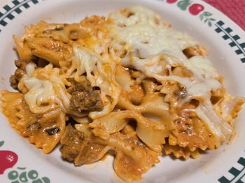

HOME
Creamy Pasta Casserole

Description
This easy meal uses cream cheese to add an extra creamy texture to ingredients that are usually on hand. Quick and delicious!
Ingredients
- 1 (12 ounce) package farfalle (bow tie) pasta
- ½ (8 ounce) package cream cheese, softened
- 1 (24 ounce) jar pasta sauce
- 1 teaspoon Italian seasoning
- ½ teaspoon red pepper flakes
- 1 pound ground beef
- 1 (one) onion
- 2 cloves garlic, minced
- ½ cup shredded mozzarella cheese
Steps
- Preheat oven to 350 degrees F (175 degrees C).
- Bring a large pot of lightly salted water to a boil. Cook the bow-tie pasta at a boil, stirring
occasionally, until cooked through yet firm to the bite, about 12 minutes; drain and return pasta
to pot. Melt cream cheese into the pasta. Stir pasta sauce, Italian seasoning, and red pepper flakes
into the pasta mixture.
- Heat a skillet over medium heat. Break ground beef into small pieces and add to the skillet; cook
and stir until some of the fat has rendered, 2 to 3 minutes. Add onion and garlic to the beef, continue
cooking until the ground beef is completely browned, about 5 minutes more. Stir beef mixture into
the pasta mixture.
- Pour pasta-and-beef mixture into a 3-quart casserole dish. Sprinkle mozzarella cheese over the dish.
- Bake in preheated oven until the mozzarella cheese melts, 5 to 10 minutes.
Source